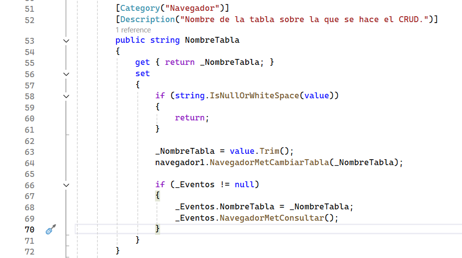
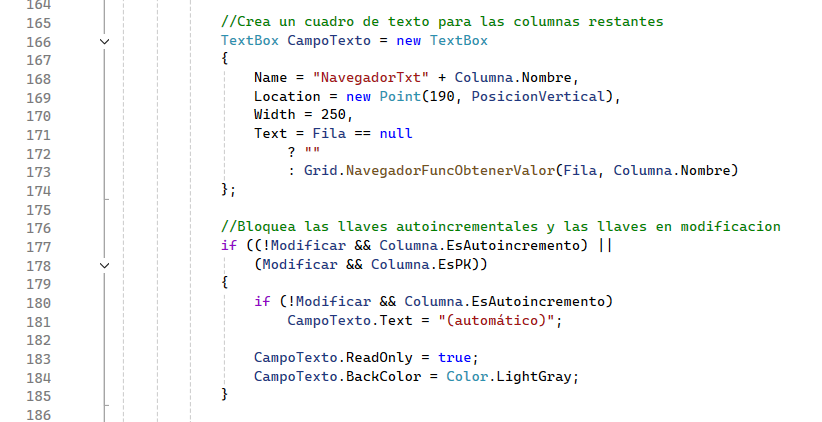
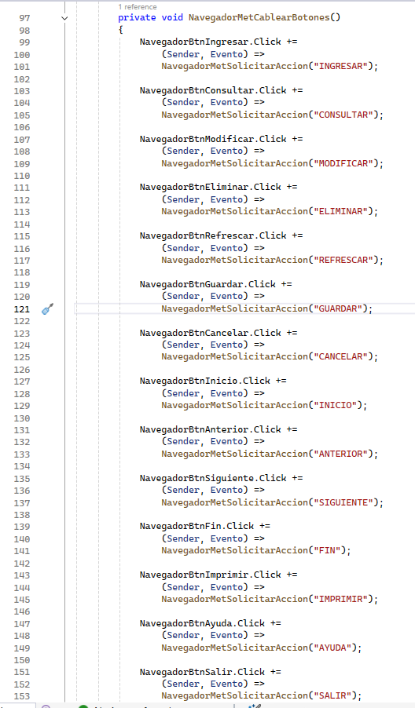

Significado de los parámetros
navegador1.NavegadorMetConfigurar("tblempleado", 4, 5);| Parámetro | Uso |
|---|---|
"tblempleado" | Nombre exacto de la tabla en la base seleccionada por el DSN. |
4 | Identificador del módulo registrado en Seguridad. |
5 | Identificador de la aplicación o pantalla en Seguridad. |
Los IDs no son permisos directos. Seguridad los combina con el usuario y sus roles para habilitar botones.


Requisitos de la tabla
- Debe existir en la base activa y su nombre debe coincidir.
- Debe tener llave primaria. Si el controlador no la detecta, el Navegador pedirá seleccionar columnas durante esa ejecución.
- Conviene definir llaves foráneas reales: el CRUD puede convertirlas en listas con datos relacionados.
- Las columnas obligatorias deben aceptar un valor que el usuario pueda proporcionar.
- Las llaves autoincrementales se muestran como automáticas y no se editan.
- Fechas y booleanos generan controles específicos; los demás campos se validan según el esquema.


Dónde está NavegadorMetCambiarTabla
No debe editar esos dos métodos para escoger una tabla. La llamada se escribe en el formulario que contiene la instancia navegador1, normalmente en el evento del botón que cambia de mantenimiento.
// Ejemplo: el mismo Navegador cambia de tabla en tiempo de ejecución.
private void BtnClientes_Click(object sender, EventArgs e)
{
navegador1.NavegadorMetCambiarTabla("tblcliente");
}Al ejecutarse, el método guarda el nuevo nombre y, si el CRUD ya está cargado, vuelve a consultar la nueva tabla.
Unión con el MDI de Seguridad
Sí. En el proyecto actual, el punto de unión es FrmMDISeguridad: el control navegador1 está colocado directamente en ese formulario y el constructor lo configura.
La configuración actual encontrada en el constructor es:
public FrmMDISeguridad()
{
InitializeComponent();
this.Load += FrmMDISeguridad_Load;
navegador1.NavegadorMetConfigurar("tblempleado", 4, 4);
}Esta línea une tres cosas: la tabla tblempleado, el módulo de Seguridad 4 y la aplicación 4.

Qué escribir en los botones del MDI
El archivo FrmMDISeguridad.cs contiene eventos como SeguridadBtnUsuarios_Click, SeguridadBtnModulos_Click, SeguridadBtnEmpleados_Click y SeguridadBtnAplicaciones_Click. Allí se decide qué mantenimiento mostrar.
Opción A: reutilizar el Navegador que ya está en el MDI
Cuando cada botón representa una aplicación distinta, use NavegadorMetConfigurar, porque debe cambiar la tabla y también los IDs usados para permisos:
private void SeguridadBtnUsuarios_Click(object sender, EventArgs e)
{
// Tabla, IdModulo, IdAplicacion de Usuarios.
navegador1.NavegadorMetConfigurar("tblusuario", 4, 5);
}
private void SeguridadBtnEmpleados_Click(object sender, EventArgs e)
{
// Tabla, IdModulo, IdAplicacion de Empleados.
navegador1.NavegadorMetConfigurar("tblempleado", 4, 4);
}navegador1 del MDI cambia de mantenimiento.Opción B: mantener formularios separados
Actualmente varios botones del MDI crean formularios y usan ShowDialog(). Si se conserva ese diseño, cada formulario abierto debe contener su propia instancia de Navegador y llamar a NavegadorMetConfigurar en su constructor. En ese caso no se llama NavegadorMetCambiarTabla desde el MDI.
navegador1, aparecerán dos mantenimientos diferentes. Elija si el CRUD vivirá en el MDI o dentro de cada formulario.